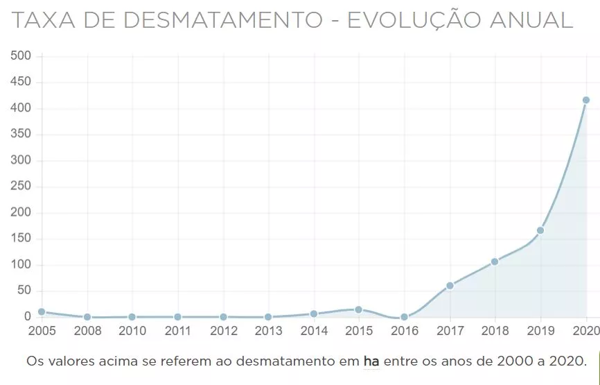
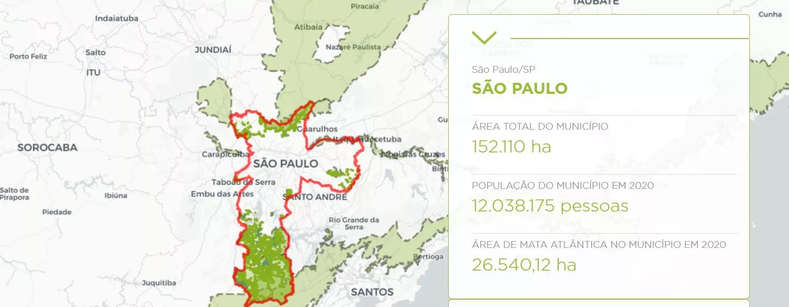

O Desmatamento no Parque Serra do Mar
O Desmatamento pode ser considerado, atualmente, um fenômeno mundial. Esta ação, feita pelo homem no desenvolvimento de atividades produtivas, pode afetar diretamente toda biodiversidade de determinado local. No Brasil, diversos locais são alvos dessa prática, diariamente, o bioma da Mata Atlântica, no nosso caso, é um dos mais atingidos por esses atos no país, apenas 12,4% do local possui vegetação originária.
No Parque Estadual da Serra do Mar, não é diferente. O local é, constantemente, vítima desta prática ilegal, com diversas notícias sobre o demstamento sendo publicadas durante os anos. Assim como em todos os locais, esta prática pode prejudicar em grande escala toda a fauna e flora do Parque, além de trazer malefícios aos arredores locais, aos seres humanos e ao planeta em sí.
Uma pesquisa feita pelo Atlas da Mata Atlântica, conduzida pela Fundação SOS Mata Atlântica, juntamente com o Instituto Nacional de Pesquisas Especiais (Inpe), revelou que 13 mil hectares de Mata Atlântica foram desmatados entre 2019 e 2020. Na região de São Paulo, na extensão do Parque da Serra do Mar, estão 19 dos municípios que mais desmataram. Na cidade de Iporanga, por exemplo, 45 hectares de Mata foram destruídos.

https://revistagalileu.globo.com/Ciencia/Meio-Ambiente/noticia/2021/06/mata-atlantica-perdeu-13-mil-hectares-por-desmatamento-entre-2019-e-2020.html
https://revistagalileu.globo.com/Ciencia/Meio-Ambiente/noticia/2021/06/mata-atlantica-perdeu-13-mil-hectares-por-desmatamento-entre-2019-e-2020.htmlAnalisando as imagens acima, podemos concluir que houve uma "explosão" dos números da taxa de desmatamento de Mata Atlântica, de 2005 até 2020. A região São paulo, como dito anteriormente, foi uma das áreas que mais desmatou durante esses anos, chegando ao número de 26.540,12 hectares sendo destrídos em 2020
Esses números podem sim demonstrar um aumento na produção de produtos derivados das árvores desmatadas, mas prejudica e muito todo o meio ambiente, trazendo consequências em todos os sentidos e formas.